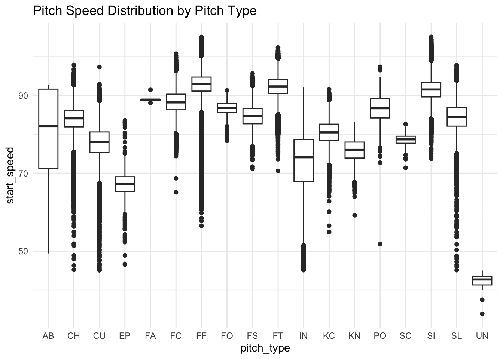
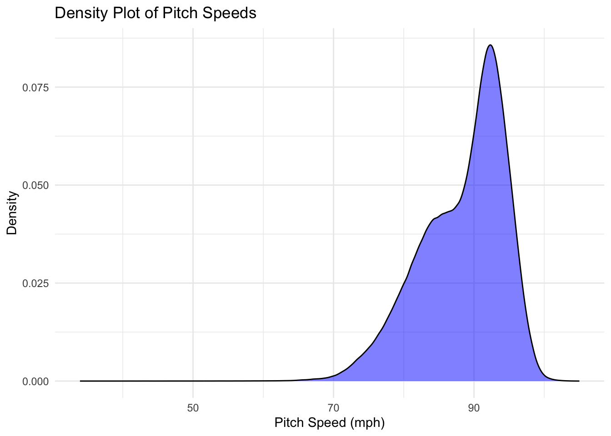
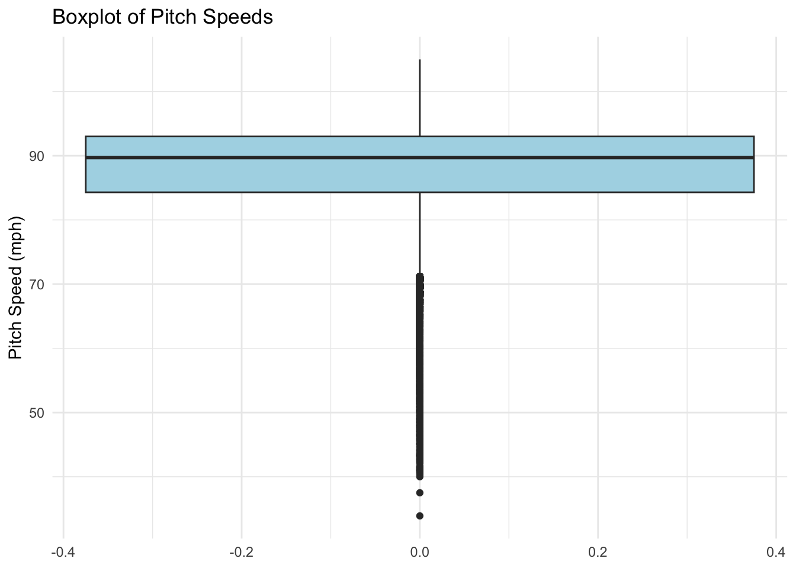
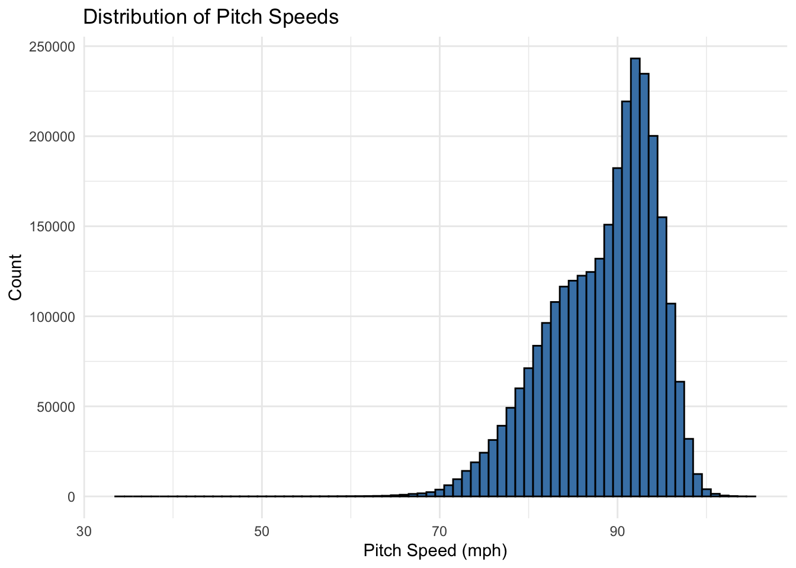
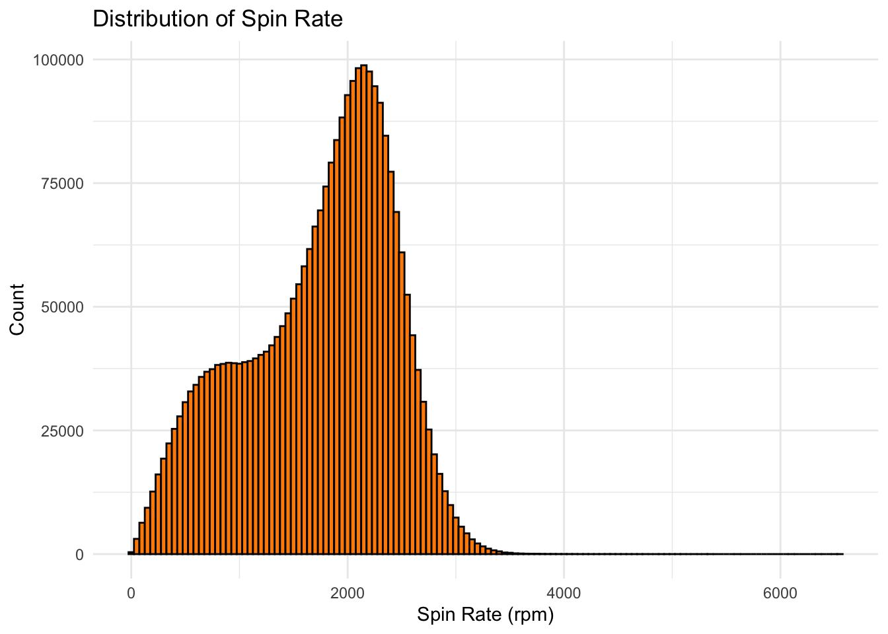

Run ‘quarto render ’Analyzing MLB Pitch Trends.qmd’ –output-dir docs’ to render docs
In this project we will analyze MLB pitch data from 2015-2018 to view trends in pitching performance using statistical analysis, predictive modeling, and classification techniques. Our goal is to develop models that predict variables like pitch speed while also implementing classification models to determine pitch type.This project will involve data cleaning, visualization, and model evaluation.
We will be using a dataset published on Kaggle titled “MLB Pitch Data (2015-2018),” which contains 8 different tables with information on pitches, at-bats, games, and players. Our focus will primarily be on the “pitches” table, which includes 2,867,154 pitch observations with 40 different attributes describing various aspects of each pitch. While most of the features are continuous variables measuring aspects like speed and rotation, categorical features such as pitch type provide opportunities for classification modeling. The dataset contains noise, including outlier pitches, missing values, and irrelevant features, which will require preprocessing before analysis. By leveraging this data, we aim to build predictive models to analyze pitch characteristics and gain deeper insights into pitching trends.
Rows: 2867154 Columns: 40
── Column specification ────────────────────────────────────────────────────────
Delimiter: ","
chr (3): code, type, pitch_type
dbl (37): px, pz, start_speed, end_speed, spin_rate, spin_dir, break_angle, ...
ℹ Use `spec()` to retrieve the full column specification for this data.
ℹ Specify the column types or set `show_col_types = FALSE` to quiet this message.
px pz start_speed end_speed
Min. :-10.543328 Min. :-5.184 Min. : 33.90 Min. :32.40
1st Qu.: -0.590634 1st Qu.: 1.650 1st Qu.: 84.30 1st Qu.:77.90
Median : 0.013000 Median : 2.259 Median : 89.70 Median :82.50
Mean : 0.006643 Mean : 2.255 Mean : 88.38 Mean :81.36
3rd Qu.: 0.609000 3rd Qu.: 2.863 3rd Qu.: 93.00 3rd Qu.:85.40
Max. : 12.952910 Max. :14.886 Max. :105.00 Max. :96.90
spin_rate spin_dir break_angle break_length
Min. : 1.214 Min. : -0.002 Min. :-90.000 Min. : 0.1
1st Qu.:1238.646 1st Qu.:137.186 1st Qu.:-11.900 1st Qu.: 4.3
Median :1866.259 Median :195.915 Median : 6.800 Median : 6.0
Mean :1731.086 Mean :180.246 Mean : 5.862 Mean : 6.6
3rd Qu.:2247.466 3rd Qu.:225.238 3rd Qu.: 27.100 3rd Qu.: 8.0
Max. :6539.259 Max. :360.001 Max. :269.400 Max. :224889.3
break_y ax ay az
Min. :23.30 Min. :-59.290 Min. :-0.5244 Min. :-77.17
1st Qu.:23.80 1st Qu.:-11.293 1st Qu.:23.4589 1st Qu.:-28.72
Median :23.80 Median : -3.150 Median :26.4727 Median :-21.59
Mean :23.82 Mean : -2.314 Mean :26.4900 Mean :-22.78
3rd Qu.:23.90 3rd Qu.: 5.986 3rd Qu.:29.3819 3rd Qu.:-15.74
Max. :36.40 Max. : 40.978 Max. :54.0570 Max. : 22.31
sz_bot sz_top type_confidence vx0
Min. :-7.921 Min. :-1.849 Min. :0.000 Min. :-24.869
1st Qu.: 1.484 1st Qu.: 3.300 1st Qu.:0.906 1st Qu.: -2.067
Median : 1.570 Median : 3.440 Median :2.000 Median : 3.991
Mean : 1.567 Mean : 3.436 Mean :1.552 Mean : 2.286
3rd Qu.: 1.659 3rd Qu.: 3.580 3rd Qu.:2.000 3rd Qu.: 6.627
Max. :10.699 Max. :10.548 Max. :2.000 Max. : 25.150
vy0 vz0 x x0
Min. :-153.36 Min. :-19.771 Min. : 0.00 Min. :-9.5560
1st Qu.:-135.51 1st Qu.: -6.513 1st Qu.: 93.61 1st Qu.:-1.9550
Median :-130.83 Median : -4.604 Median :116.28 Median :-1.3340
Mean :-128.86 Mean : -4.421 Mean :116.28 Mean :-0.7197
3rd Qu.:-122.94 3rd Qu.: -2.488 3rd Qu.:139.33 3rd Qu.: 0.7715
Max. : -47.55 Max. : 27.815 Max. :249.95 Max. : 9.6760
y y0 z0 pfx_x
Min. : 0.0 Min. :50 Min. :-1.941 Min. :-28.092
1st Qu.:160.9 1st Qu.:50 1st Qu.: 5.564 1st Qu.: -6.453
Median :177.3 Median :50 Median : 5.842 Median : -1.883
Mean :176.3 Mean :50 Mean : 5.814 Mean : -1.143
3rd Qu.:193.7 3rd Qu.:50 3rd Qu.: 6.104 3rd Qu.: 3.860
Max. :250.0 Max. :50 Max. :10.596 Max. : 22.020
pfx_z nasty zone code
Min. :-70.206 Min. : 0.00 Min. : 1.00 Length:2847250
1st Qu.: 2.160 1st Qu.: 32.00 1st Qu.: 6.00 Class :character
Median : 6.090 Median : 44.00 Median :11.00 Mode :character
Mean : 5.047 Mean : 44.42 Mean : 9.82
3rd Qu.: 8.950 3rd Qu.: 56.00 3rd Qu.:13.00
Max. : 33.160 Max. :100.00 Max. :14.00
type pitch_type event_num b_score
Length:2847250 Length:2847250 Min. : 3.0 Min. : 0.000
Class :character Class :character 1st Qu.: 149.0 1st Qu.: 0.000
Mode :character Mode :character Median : 302.0 Median : 1.000
Mean : 312.7 Mean : 2.255
3rd Qu.: 464.0 3rd Qu.: 3.000
Max. :1336.0 Max. :25.000
ab_id b_count s_count outs
Min. :2.015e+09 Min. :0.0000 Min. :0.0000 Min. :0.0000
1st Qu.:2.016e+09 1st Qu.:0.0000 1st Qu.:0.0000 1st Qu.:0.0000
Median :2.017e+09 Median :1.0000 Median :1.0000 Median :1.0000
Mean :2.017e+09 Mean :0.8807 Mean :0.8831 Mean :0.9812
3rd Qu.:2.018e+09 3rd Qu.:2.0000 3rd Qu.:2.0000 3rd Qu.:2.0000
Max. :2.018e+09 Max. :4.0000 Max. :2.0000 Max. :2.0000
pitch_num on_1b on_2b on_3b
Min. : 1.000 Min. :0.0000 Min. :0.0000 Min. :0.00000
1st Qu.: 1.000 1st Qu.:0.0000 1st Qu.:0.0000 1st Qu.:0.00000
Median : 3.000 Median :0.0000 Median :0.0000 Median :0.00000
Mean : 2.895 Mean :0.3025 Mean :0.1846 Mean :0.09488
3rd Qu.: 4.000 3rd Qu.:1.0000 3rd Qu.:0.0000 3rd Qu.:0.00000
Max. :21.000 Max. :1.0000 Max. :1.0000 Max. :1.00000
Lets look at the categorical features and check their value counts
table(pitch_df$pitch_type)
AB CH CU EP FA FC FF FO FS FT
9 292123 233913 812 9 149376 1012917 810 43533 337244
IN KC KN PO SC SI SL UN
6187 66410 11260 626 113 242047 449804 57
AB = Automatic Ball (e.g., pitch-clock violation, or other “auto ball” call)
CH = Changeup
CU = Curveball
EP = Eephus
FA = Fastball (general fastball label)
FC = Cutter
FF = Four-Seam Fastball
FO = Forkball
FS = Split-Finger Fastball (Splitter)
FT = Two-Seam Fastball
IN = Intentional Ball (Intentionally thrown outside for a walk)
KC = Knuckle Curve
KN = Knuckleball
PO = Pitch-Out
SC = Screwball
SI = Sinker
SL = Slider
UN = Unknown (classification software couldn’t assign a type)
table(pitch_df$type)
B S X
1033525 1302864 510861
table(pitch_df$code)
*B B C D E F H I L M P
65538 954229 479654 116795 64038 495293 6925 6207 8427 1839 617
Q R S T V W X Z
6 2 270656 23890 9 23097 330027 1
Visualize Outliers
Pitch Speed Distribution by Pitch Type
library(ggplot2)ggplot(pitch_df, aes(x=pitch_type, y= start_speed)) +geom_boxplot() +theme_minimal() +labs(title ="Pitch Speed Distribution by Pitch Type")

Distribution of Pitch Types
ggplot(pitch_df, aes(x = pitch_type)) +geom_bar(fill ="steelblue") +theme_minimal() +labs(title ="Frequency of Different Pitch Types")

Distribution of Pitch Speeds
ggplot(pitch_df, aes(x = start_speed)) +geom_density(fill ="blue", alpha =0.5) +theme_minimal() +labs(title ="Density Plot of Pitch Speeds", x ="Pitch Speed (mph)", y ="Density")

Outliers in Pitch Speed (start)
ggplot(pitch_df, aes(y = start_speed)) +geom_boxplot(fill ="lightblue") +theme_minimal() +labs(title ="Boxplot of Pitch Speeds", y ="Pitch Speed (mph)")
Histograms for pitch speed, and spin rate
ggplot(pitch_df, aes(x = start_speed)) +geom_histogram(binwidth =1, fill ="steelblue", color ="black") +theme_minimal() +labs(title ="Distribution of Pitch Speeds", x ="Pitch Speed (mph)", y ="Count")

ggplot(pitch_df, aes(x = spin_rate)) +geom_histogram(binwidth =50, fill ="darkorange", color ="black") +theme_minimal() +labs(title ="Distribution of Spin Rate", x ="Spin Rate (rpm)", y ="Count")

Correlation Analysis
We will create a correlation matrix among all numeric variables
library(corrplot)
corrplot 0.95 loaded
numeric_vars <-sapply(pitch_df, is.numeric)numeric_data <- pitch_df[, numeric_vars]corr_mat <-cor(numeric_data)corrplot( corr_mat,method ="circle",type ="upper",order ="hclust", #hierachical clustering of varstl.col ="black", #text colortl.cex =0.7, # text sizetl.srt =45, #rotationcol =colorRampPalette(c("navy", "white", "firebrick3"))(200) #Set a palette)